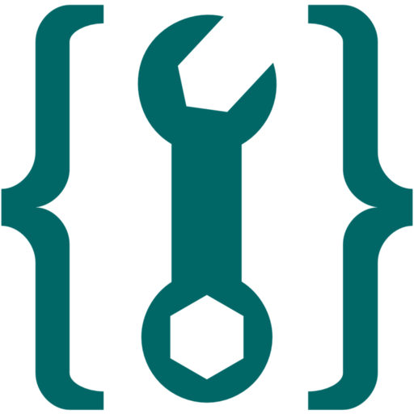

The figure and figcaption element
This demo shows use of html figure elements...

Fig.1 - Sample Image weij we owjroiew jroiew joiwewjrwe
Fig.1 - Sample Image
Fig.1 - Sample Image
Fig.1 - Sample Image
End of the figures..